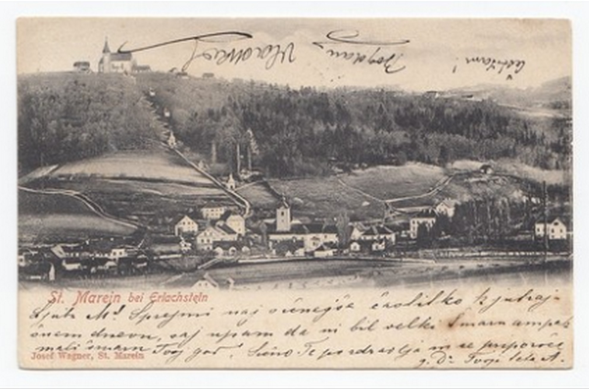
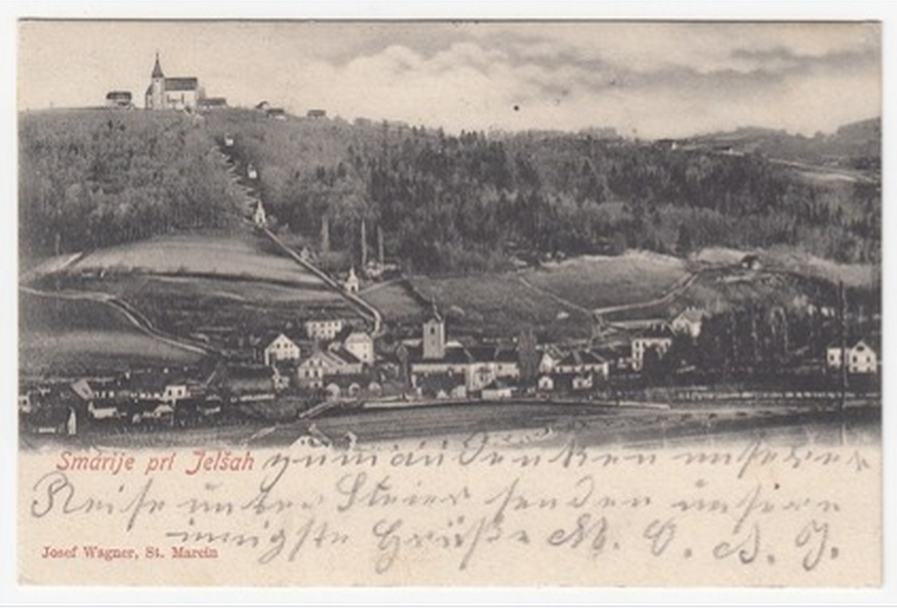
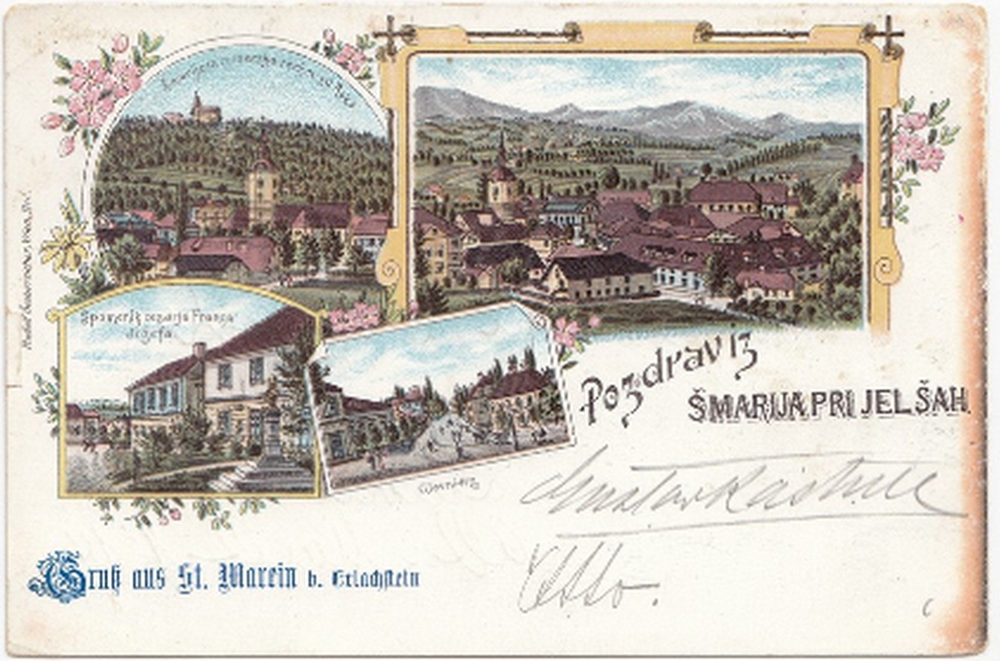
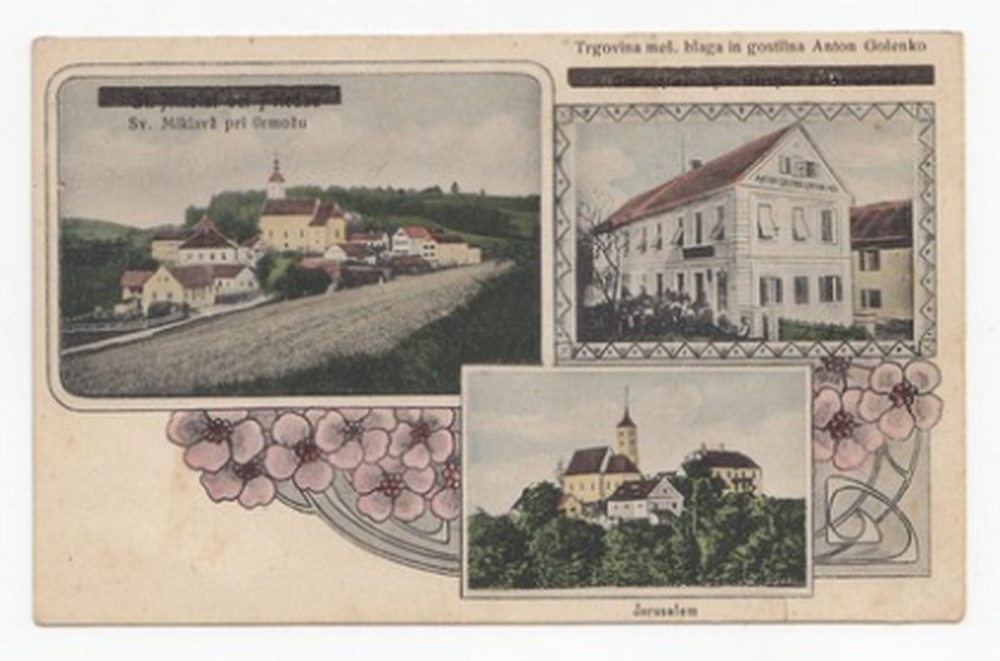

1Po koncu prve svetovne vojne in razpadu Avstro-Ogrske si je nova slovenska uprava prizadevala vzpostaviti jezikovno homogeno in popolnoma slovenizirano ozemlje na področjih nekdanje habsburške Štajerske, ki so prišla pod jugoslovansko oblast. Namen tega prispevka je pokazati, da so razglednice lahko uporaben vir za razumevanje procesa postimperialne slovenizacije.
2Ključne besede: razglednice, slovenizacija, Štajerska, izobraževanje, Kraljevina Srbov, Hrvatov in Slovencev
1After World War I and the collapse of Austria-Hungary, the new Slovenian administration strived to establish a linguistically homogeneous and fully Slovenianised territory in the parts of the former Habsburg Styria that had come under the Yugoslav authority. This contribution aims to show that postcards can be a valuable source for understanding the process of post-imperial Slovenianisation.
2Keywords: postcards, Slovenianisation, Styria, education, Kingdom of Serbs, Croats and Slovenes
1V prvi polovici februarja 1919 je iz majhnega štajerskega kraja Šmarje pri Jelšah na sedež najvišjega upravnega telesa, odgovornega za šolstvo v slovenskem delu Kraljevine Srbov, Hrvatov in Slovencev, romalo jezno pismo. Člani šmarskega okrajnega šolskega sveta so v njem z ostrimi besedami ugovarjali nedavno sprejeti odločitvi Poverjeništva za uk in bogočastje, s katero je bila predvidena uvedba nemščine kot neobveznega učnega predmeta na vseh slovenskih narodnih šolah. Tovrstni ukrep provizoričnega »slovenskega« ministrstva je bil po prepričanju šmarskih odbornikov nezakonit. Na osnovi pravnih določil iz let 1869 in 1905, na katera so se odborniki sklicevali v svojem pismu, naj bi bilo namreč treba za mnenje o uvedbi neobveznih učnih predmetov povprašati tudi tiste, ki šolo vzdržujejo – torej krajevni šolski svet, pa tudi predstavnike občin.1
2Glede poučevanja nemščine so šmarski šolski odborniki v novih časih zlate svobode zagovarjali strogo stališče. Na začetku decembra 1918 so tako na svoji seji sklenili, da je treba v vseh narodnih šolah šmarskega okraja poučevanje nemščine nemudoma odpraviti. Ker je njihovo odločitev kmalu zatem potrdila tudi ljubljanska Narodna vlada, so odborniki februarja 1919 zaključili, da naj sploh ne bi bilo zakonskih možnosti za ponovno vpeljavo pouka nemškega jezika v slovenske narodne šole.2
3Vendar pa člani šmarskega okrajnega šolskega odbora svojega ugovora niso utemeljevali zgolj s pravnimi argumenti, tj. s sklicevanjem na sklep Narodne vlade in obenem na zakonske določbe, ki so bile sprejete v državi, ki leta 1919 ni več obstajala. Legalističen ton pisma je namreč že po nekaj vrsticah zamenjala retorika jezikovne ekskluzivnosti. Odborniki so opozorili, da naj bi bilo učenje nemščine že v avstro-ogrski dobi zgolj nepotrebno zapravljanje časa in nadležno obremenjevanje učiteljev. Pri slovensko govorečih šmarskih učencih naj niti ne bi prinašalo pretiranega uspeha. Še več, že dotlej naj bi velika večina slovenskih domačinov dobro shajala brez znanja nemščine, medtem ko jim v Kraljevini Srbov, Hrvatov in Slovencev morebitno znanje nemščine tako ali tako ne bo v prav nobeno korist. Obenem šmarski odborniki niso pozabili omeniti niti dejstva, da je bila šmarska ljudska šola prva na Slovenskem, ki ji je uspelo s pomočjo razsodbe upravnega sodišča že pred tridesetimi leti nemščino iz obveznega spremeniti v neobvezni predmet. »In sedaj,« so se retorično vprašali člani okrajnega šolskega sveta, »ko smo v svoji svobodni državi, smo prosti tujčeve sovražne nadvlade, naj še vedno občutimo nemško peto če tudi v slovenskem škornju? Ne, pa ne!« Zato naj se nemščina v Šmarju pri Jelšah povsem odpravi tako iz deške kot iz dekliške narodne šole, so zaključili odborniki.3
4Stališče šmarskih šolskih odbornikov, s katerim so na začetku leta 1919 nasprotovali učenju nemškega jezika, je potemtakem poskušalo ustvariti vtis, da nemščina že v desetletjih pred razpadom dvojne monarhije v Šmarju pri Jelšah ni igrala prav nobene vloge. Kraj naj bi bil trdno v slovenskih rokah. V njem naj bi živeli zgolj Slovenke in Slovenci, ki naj bi komunicirali izključno v slovenščini in ki naj bi povrh tega rojevali in vzgajali še za nemščino docela nenadarjene otroke. Nemščine naj v Šmarju pri Jelšah potemtakem skorajda ne bi bilo.
5Predvojni rezultati popisov prebivalstva pritrjujejo tovrstnemu rezoniranju. Že od prvega popisa naprej se je le peščica prebivalcev sodnega okraja Šmarje/St. Marein odločila za nemščino kot lastni občevalni jezik. Leta 1880 je bilo takih prebivalcev 45 od 18.174, leta 1890 106 od 18.745, leta 1900 91 od 18.170 in leta 1910 123 od 17.740.4 V tem smislu zato stališče krajevnih šolskih odbornikov nikakor ni bilo nerazumno. Če je že v »predjugoslovanskem« obdobju le zanemarljiv delež prebivalk in prebivalcev občeval v nemškem jeziku, mar to ne pomeni, da leta 1919 nemški jezik nima kaj početi v osnovnih šolah novoustanovljene nacionalne države južnih Slovanov?
6Po drugi strani številni razpoložljivi viri podajajo bolj niansiran vpogled v spodnještajersko jezikovno realnost. Ta je bila, po vsem sodeč, veliko bolj raznovrstna od stališča krajevnih šolskih odbornikov, pa tudi od podobe enojezične homogenosti, ki so jo vzpostavljali staroavstrijski popisi prebivalstva. Primer treh razglednic, ki so bile na prelomu iz 19. v 20. stoletje poslane prav iz Šmarja pri Jelšah/St. Marein bei Erlachstein, je tozadevno precej poveden in ilustrativen. Nudi namreč pogled onkraj uradne klasifikacije občevalnih jezikov, ki je na Spodnjem Štajerskem jezikovno realnost popredalčkala v dve hermetični in strogo ločeni kategoriji – nemško in slovensko.
7Kar zadeva vizualno podobo, se te tri razglednice resda niso pretirano razlikovale druga od druge. Dve izmed njih sta v svet posredovali tako rekoč identično panoramsko upodobitev kraja z romarsko cerkvijo v ozadju, ki je z bližnjega hriba obvladovala središče tega majhnega spodnještajerskega trga. Tretja se je od prvih dveh razlikovala po vsebinski pestrosti. Natisnjena je bila v barvah, sestavljal pa jo je kolaž štirih prizorov: ob dveh panoramskih upodobitvah je prejemnica razglednice, ki je prebivala v glavnem mestu sosednje kronovine Kranjske, lahko občudovala tudi prikaz glavnega šmarskega trga ter spomenik Francu Jožefu, ki je bila v tem precej odročnem in prevladujoče ruralnem kraju očitno ena od tistih lokalnih znamenitosti, ki se jo je izdajatelju razglednice zdelo vredno še posebej izpostaviti. A četudi se dve izmed treh razglednic med seboj po vizualni motiviki sploh ne razlikujeta, tretja pa je zgolj nekoliko pestrejša variacija prvih dveh, pa so se te tri razglednice druga od druge vendarle razločevale v pomembni podrobnosti. Na prvi je bilo besedilo, natisnjeno v nemškem jeziku, na drugi v slovenskem, tretja je pa bila dvojezična. Še več, na prvi, z natisnjenim besedilom v nemškem jeziku, je pošiljatelj uporabil kot sredstvo komunikacije slovenski jezik, na drugi, z natisnjenim besedilom v slovenskem jeziku, se nahaja v jezikovnem smislu ne pretirano izpopolnjena nemščina s številnimi slovničnimi napakami, medtem ko sta na dvojezični neki Otto in Gustav pisala Fraulein Janesch v Laibach.

Hrani: Narodna in univerzitetna knjižnica Ljubljana
Hrani: Stift Admont
Hrani: Osrednja Knjižnica Celje8Nemška in dvojezična razglednica sugerirata precej očiten zaključek. V Šmarju pri Jelšah/St. Marein bei Erlachstein pred razpadom dvojne monarhije navkljub statistični prevladi slovenskega občevalnega jezika v vsakodnevnem občevanju ni bila v rabi zgolj slovenščina. V poznem avstrijskem obdobju so ob govorcih slovenskega jezika bili tukaj navzoči tudi govorci nemščine, pa tudi taki, ki so prakticirali dvojezičnost in ki jim je bila tovrstna dvojezičnost do te mere običajna, da so jo izkazovali z nakupovanjem in razpošiljanjem razglednic. Raba razglednic je tozadevno povedna. Gre za sredstvo komunikacije, ki ni bilo zgolj enostavno za rabo in zato množično. Hkrati je zaradi svoje napol zasebne narave zabrisovalo črto med javno in zasebno sfero in na ta način nudilo uvid v pošiljateljeve jezikovne preference. V kraju so bile skratka prisotne tudi drugačne jezikovne prakse, in to v tolikšni meri, da se je založnikom splačalo na tržišče posredovati tudi nemške in dvojezične razglednice.
9A kot lahko razberemo iz pritožbe krajevnega šolskega sveta, je tovrstno spodnještajersko jezikovno realnost pozne avstrijske dobe zmagovita slovenska nacionalistična retorika, ki je na današnjem slovenskem ozemlju zavladala v prvih povojnih letih, puščala najmanj ob strani, če je že ni eksplicitno zamolčevala. Še več, nova slovenska oblast je v prvih povojnih mesecih in letih na tistih predelih nekdanje kronovine Štajerske, ki jih je administrativno in vojaško obvladovala, z vrsto administrativnih ukrepov tudi dejansko poskušala ustvariti jezikovno homogen in docela sloveniziran teritorij. Pokrajino, kjer so nemški in slovenski lokalni govori drug ob drugem v različnih vsakodnevnih kontekstih sobivali stoletja, sodobna knjižna slovenščina pa se je vsaj od srede 19. stoletja soočala s sodobno knjižno nemščino, je želela preobraziti v »slovensko Štajersko« kot sestavni del slovenskega nacionalnega prostora v okviru kraljevine južnih Slovanov. Kot bom poskusil pokazati v nadaljevanju tega prispevka, je odmevom tovrstnih administrativnih teženj po slovenizaciji ozemlja mogoče slediti tudi s pomočjo razglednic.
1Retorika jezikovnega ekskluzivizma, s katero so šmarski odborniki utemeljevali svojo zahtevo po odstranitvi nemščine iz lokalnih narodnih šol, je na začetku leta 1919 zvenela prepričljivo, saj je sovpadala s podobo, ki je takrat dominirala v javnem diskurzu – s podobo Avstro-Ogrske kot ječe narodov. Četudi je bila v tovrstnem interpretativnem okviru habsburška monarhija upodobljena kot politična tvorba, ki je več stoletij zatirala podjarmljene slovanske narode, pa je bil retorični topos t. i. ječe narodov pravzaprav precej mlajšega nastanka. Vzpostavil se je v času prve svetovne vojne, ko ga je za potrebe propagande in ideološkega spodkopavanja vojaške nasprotnice pričela načrtno razširjati britanska vojno-propagandna služba. V srednjeevropskem prostoru se je predstava o avstro-ogrski ječi narodov kakor požar razširila šele jeseni in pozimi 1918, torej v tednih in mesecih po koncu spopadov in razkroju imperialnega administrativnega in političnega ustroja.5
2Pripadniki političnih in kulturnih elit – številni med njimi so še nekaj mesecev prej brez vsakršnih zadržkov in pomislekov živeli in delovali kot zvesti cesarjevi služabniki in skrbni državni uradniki – so s pomočjo tovrstne retorike lahko osmislili svoj položaj v novem, zelo drugačnem postimperialnem državnem ustroju, ki ga je definirala ideja nacije in samoodločbe narodov. Z metaforo ječe narodov, ki so jo novi oblastniki in administrativni aparati v državah naslednicah bolj ali manj načrtno razširjali med prebivalstvom, se je potemtakem Avstro-Ogrska čez noč iz domovine, ki ji je bila velika večina prebivalstva lojalna skorajda do samega konca, preobrazila v avtokratsko in nenaravno politično tvorbo, kjer so Nemci in Madžari zatirali preostale nacionalne skupnosti, jim odrekali pravico do njihove kulturne specifičnosti, predvsem pa onemogočali razcvet in uveljavitev njihovih nacionalnih jezikov. Postimperialna retorika je legitimirala novo politično prakso tudi na ozemlju nekdanjih habsburških historičnih dežel, ki jih je od jeseni 1918 obvladovala Narodna vlada v Ljubljani. Tudi tukaj Nemci niso bili več dobrodošli. Na zelo slab glas je prišel tudi nemški jezik. Sedaj, ko naj bi končno nastopila svoboda, je bilo zato treba dosledno obračunati tako z Nemci kot tudi z nemščino kot temeljnim atributom domnevne nemške zatiralske politike. Za nemški jezik v državnih uradih, še zlasti pa v šolah, ni bilo več prostora.
3Vendar pa retorika jezikovnega ekskluzivizma, s katero so lokalni šolski odborniki iz Šmarja pri Jelšah februarja 1919 utemeljevali svoje nasprotovanje poučevanju nemškega jezika, ni bila samo izraz na novo izoblikovanega pogleda na dvojno monarhijo kot ječo narodov. Nasprotno, bila je tudi dediščina lokalnega nacionalnega spopada pozne avstrijske dobe. Slednje je še zlasti veljalo za področja nekdanje Spodnje Štajerske. Ta prostor je bil že od šestdesetih let 19. stoletja naprej središče fizičnih, verbalnih in juridičnih obračunov med tekmujočima nacionalnima taboroma. Že v desetletjih pred izbruhom prve svetovne vojne so slovenski in nemški etnolingvistični nacionalni aktivisti po spodnještajerskih vaseh, trgih in mestecih razširjali nacionalističen pogled na svet in tekmovali za srca in duše lokalnega prebivalstva. V središču njihovega spopada je bil zmeraj jezik. Srednjeevropski nacionalistični svetovni nazor, ki se je uveljavljal in postopoma širil od začetka 19. stoletja naprej, je namreč opredeljevala prav etnolingvistična podmena o jeziku kot kulturnem atributu, s pomočjo katerega naj bi bilo mogoče objektivno določiti posameznikovo etnično oziroma nacionalno pripadnost. V nacionalističnih predstavah pozne avstrijske dobe je bil zato govorec slovenskega jezika nujno Slovenec, govorec nemškega jezika pa Nemec. To pa pomeni, da se je po razpadu Avstro-Ogrske postimperialna retorika ječe narodov potemtakem prekrivala s starejšim diskurzom etnolingvističnega nacionalizma, kjer jezik ni bil razumljen zgolj kot sredstvo komunikacije, pač pa tudi kot objektivno znamenje etnične pripadnosti in zato posredno tudi kot nacionalna svetinja, ki naj bi se ji bili pripravljeni odpovedati samo nacionalno šibki in renegatsko razpoloženi posameznice in posamezniki. Na dvo- in večjezičnih območij so s tem vsakodnevne prakse jezikovnega komuniciranja dobile značaj fundamentalnega političnega problema.6
4Tovrsten proces širjenja ideje in prakse etnolingvističnega nacionalizma je v pozni avstrijski dobi zaznamoval tudi vsakdan lokalnega prebivalstva v Šmarju pri Jelšah/St. Marein bei Erlachstein. Na začetku 20. stoletja se je kraj po nekaj desetletjih načrtnih slovenizacijskih prizadevanj v resnici uveljavil kot pomembno lokalno središče slovenstva. V hiši lokalnega veleposestnika in podpornika slovenskega nacionalnega gibanja Franca Skaze so se srečevali pomembni slovenski nacionalni aktivisti in izobraženci, denimo Anton Martin Slomšek, Josip Vošnjak, Davorin Trstenjak, Valentin Zarnik in Anton Aškerc. V kraju so od začetka ustavne dobe naprej nastajala slovenska nacionalna društva. Leta 1870 je bilo ustanovljeno politično društvo Naprej, leta 1883 Narodna čitalnica, leta 1886 podružnica Družbe Sv. Cirila in Metoda. Lokalnim nacionalnim aktivistom je uspelo po sodni poti uvesti slovenski jezik v državno ljudsko šolo, od koncu 19. stoletja pa so imeli Slovenci občinsko upravo trdno v rokah. Pri tem pa so svojo oblast na lokalni ravni – tozadevno se sicer v prav ničemer niso razlikovali od večine lokalnih nacionalnih aktivistov na večjezičnih področjih pozne avstrijske dobe – izkoriščali za načrtno uveljavljanje slovenskega jezika, slovenskih političnih stališč in z idejo slovenstva zaznamovanih svetovnonazorskih pogledov. O tem zgovorno govori primer lokalnih prostovoljnih gasilcev, ki so bili leta 1880 ustanovljeni pod nemškim nazivom »Freiwillige Feuerwehr St. Marein bei Erlachstein«. Leta 1900, ko je začel nov župan uradovati v slovenskem jeziku, je tudi od članov gasilskega društva zahteval, da uvedejo slovenski poveljevalni jezik. Ko so se pripadniki požarne straže temu uprli, jim je odrekel občinsko podporo. Požarna bramba je s tem prenehala delovati, po nekaj letih pa je bila znova ustanovljena, in sicer kot zgolj slovenska organizacija. A kljub temu. Četudi je bil kraj na začetku 20. stoletja že trdno v rokah slovenskega nacionalnega tabora, pa v uvodu omenjene razglednice izkazujejo prisotnost nemškega jezika tudi v Šmarju pri Jelšah/St. Marein bei Erlachstein, kar po svoje ne preseneča, saj so imele v kraju svoj sedež državne institucije, obenem pa je kraj ležal na trgovski poti med Celjem in Rogatcem (Rogaško Slatino), ki je vodila naprej na Hrvaško.7
1Navkljub zakoreninjenosti retorike in prakse slovenskega in nemškega etnolingvističnega nacionalizma v javnem življenju, je do razpada Avstro-Ogrske Spodnja Štajerska ostajala območje dvojezičnosti. To je veljalo povsod, tudi v tistih krajih, za katere so nemški in slovenski nacionalni aktivisti trdili, da naj bi bili od zmeraj nemški oziroma slovenski, če že v njih naj ne bi živeli zgolj Nemci oziroma Slovenci. Na podoben način, kot so nemški nacionalisti naredili vse za to, da bi obvladovali lokalno javno življenje, rituale in prakse v spodnještajerskih provincialnih mestih in večjih trgih, je gosta mreža slovenskih nacionalnih aktivistov in njihovih organizacij obvladovala ruralna področja in manjše trge. Pri tem pa niti enim niti drugim navkljub nadzoru nad lokalnimi samoupravnimi institucijami in društvenim življenjem vse do razpada monarhije nikoli ni uspelo uveljaviti popolne enojezične jezikovne homogenosti. Na Spodnjem Štajerskem so zato enojezične in enonacionalne skupnosti ostajale neuresničen ideal, ki ga v obstoječem političnem in upravnem kontekstu navkljub vnetim prizadevanjem nacionalnih aktivistov ni bilo mogoče udejanjiti. O tem pripovedujejo tudi razglednice: na voljo so bile nemške, slovenske in dvojezične, na njih pa so se pošiljatelji izražali v nemščini, slovenščini in tudi, sicer resda poredko, v bolj ali manj strukturirani mešanici teh dveh jezikov.
2V tem smislu je razpad dvojne monarhije brez dvoma pomenil pomemben prelom. Na ozemlju Spodnje Štajerske je jeseni in pozimi 1918 svojo oblast uspela uveljaviti Narodna vlada za Slovenijo, pokrajina pa je bila z novim imenom – kot Slovenska Štajerska – vključena v Državo Slovencev, Hrvatov in Srbov. Z mirovnim sporazumom je ta del nekdanje habsburške kronovine postal sestavni del Kraljevine Srbov, Hrvatov in Slovencev, pri čemer je bilo v administrativnem smislu v prvih povojnih letih celotno področje podrejeno upravnim telesom Narodne (kasneje Deželne) vlade v Ljubljani.8
3Od prevzema deželnega in državnega upravnega aparata jeseni 1918 naprej so bili številni ukrepi nove slovenske oblasti uperjeni neposredno zoper potencialne notranje nasprotnike – pripadnike nemško govorečega prebivalstva, ki je živelo na Kranjskem in Spodnjem Štajerskem. Še zlasti na Spodnjem Štajerskem je, kot ugotavlja Andrej Studen, »v prvih povojnih letih 'etos maščevalnosti' povsem prevladal nad čutom pravičnosti. Bil je neprestano v konfliktu z idejo zakonitosti in upoštevanja enakopravnosti«.9 Spodnještajerski slovenski nacionalni aktivisti, ki so v posthabsburških upravnih telesih zasedali pomembna mesta, so v spremenjenih okoliščinah dobili priložnost za obračun z (domnevnimi) denuncianti, ki so z obtožbami o »srbofilstvu« sodelovali pri njihovem preganjanju ob izbruhu prve svetovne vojne. Največkrat so jih poiskali v vrstah svojih predvojnih nacionalnih nasprotnikov. V splošnem pa je k radikalnosti ukrepov zoper lokalno prebivalstvo na Kranjskem in Spodnjem Štajerskem, ki se je identificiralo kot nemško ali pa ga je kot nemško klasificiral slovenski administrativni aparat, prispeval tudi močan občutek ogroženosti. V nemirnem postimperialnem času obmejnih spopadov na Koroškem in Štajerskem in italijanske okupacije področij nekdanjega Avstrijskega primorja sta se med pripadniki slovenske politične in kulturne elite v mesecih po razpadu Avstro-Ogrske kot požar širila zaskrbljenost za osebno eksistenco in nacionalistična paranoja. V tem kontekstu je bilo poleti 1919 tako razpuščenih več kot 200 podružnic nemških društev, in sicer z utemeljitvijo, da gre za podružnice društev s sedežem v tujini, za katere velja, da s svojim delovanjem nasprotujejo interesom Kraljevine SHS. Premoženje teh nemških društev je bilo zaplenjeno. Državni in deželni uradniki, ki so se do razpada monarhije deklarirali kot Nemci, so bili postopoma odpuščeni. Med letoma 1918 in 1921 naj bi se z ozemlja pod nadzorom slovenskih oblasti izselilo okoli 30.000 Nemcev, še zlasti uradnikov in njihovih družin.10
4Ob neposrednem obračunu z nemško čutečim prebivalstvom so odloki Narodne vlade, ki jih je ta sprejela v prvih tednih in mesecih po razpadu Avstro-Ogrske, odločno posegli tudi v štajersko jezikovno stvarnost. Že na svoji prvi seji 1. novembra 1918 je Narodna vlada na ozemlju, ki ga je nadzirala, razglasila slovenščino za uradni jezik. Obenem si je oblast močno prizadevala za slovenizacijo zunanje podobe krajev. Dvojezični in nemški ulični napisi, pa tudi napisi nad uradi, trgovinami, delavnicami in pisarnami so bili zamenjani s slovenskimi napisi.11 Marsikje na nekdanjem Spodnjem Štajerskem so se ob prevratu sploh šele prvič srečali s knjižno slovenščino. Tako ne preseneča, da so v mariborskem slovenskem nacionalističnem časopisu Straža svojemu bralstvu konec decembra v zvezi s slovenjenjem uličnih napisov posredovali naslednji napotek: »Da bodo vse tvrdke imele napise v lepi slovenščini, opozarjamo na to, da je čisto nepravilno in nemškovalno reči n. pr. 'k zlatemu jagnjetu', 'k belemu volu'. Edino prav je: 'Pri zlatem jagnjetu', 'pri belem volu', 'pri mastni raci'.«12
5Ob slovenizaciji uprave in javnega prostora je bilo še posebej korenitih posegov deležno področje šolstva. Nova slovenska oblast se je nemudoma zelo zavzela za čimprejšnjo in čim temeljitejšo uvedbo slovenščine kot učnega jezika na vseh osnovnih in srednjih šolah. Na ozemlju, ki je bilo od jeseni 1918 naprej pod nadzorom ljubljanske Narodne vlade, je bil namreč »še leta 1900 učni jezik na tretjini osnovnih šol na Spodnjem Štajerskem ali samo nemški ali pa so bile šole dvojezične v izrazito korist nemščine«.13 Še zlasti pa je slovenske nacionaliste motilo, da je tudi na realkah in gimnazijah, kjer se je vzgajala in izobraževala bodoča elita, pouk potekal skorajda izključno v nemščini. Pristojni uradniki na različnih nivojih državne administracije so se zato preureditve šolstva lotili s skorajda revolucionarnim zanosom. Poverjeništvo za uk in bogočastje je prevzel štajerski politik in srednješolski profesor dr. Karel Verstovšek – eden redkih štajerskih ministrov v večinsko »kranjski« ljubljanski Narodni vladi – ki je zagovarjal čim ostrejši in karseda restriktiven odnos do nemščine. Z naredbo o učnem jeziku, ki je bila sprejeta 16. novembra, je bila slovenščina predpisana kot izključni šolski jezik na vseh ljudskih in meščanskih šolah. Naredba, ki je bila izdana nekaj tednov kasneje, pa je okrajnim in krajevnim šolskim svetom naročala, naj »na terenu« neposredno preverijo, kje bi bila nemščina smiselna kot neobvezni šolski predmet zaradi potencialnih ekonomskih interesov, in kje bi jo veljalo povsem črtati iz predmetnika. Številni štajerski šolski sveti so – kot razkriva tudi primer iz Šmarja pri Jelšah – tozadevno zavzeli ostro protinemško stališče. Posledično so bile šole na štajerskem povečini slovenizirane, v krajih z nemškim prebivalstvom pa so bile dovoljene vzporednice z nemškim učnim jezikom. Obenem je oblast načrtno omejevala vpis tudi v zgolj nemške (povečini zasebne) šole. Šole z izključno nemškim učnim jezikom naj bi bile dovoljene zgolj v primeru, ko je bilo v razred vpisanih najmanj 40 otrok »pristno nemške narodnosti«, pri čemer slovenska oblast med »pristno nemške« ni prištevala otrok iz mešanih zakonov. Obenem je bila tudi v teh šolah uvedena slovenščina kot učni predmet, učitelji pa so morali obljubiti, da se bodo v doglednem času naučili slovenščine in opravili izpit iz slovenskega jezika. Po istem kopitu je bila izvedena tudi slovenizacija srednjega šolstva. Utrakvistične in nemške gimnazije in realke so bile slovenizirane, uveden je bil pouk srbohrvaščine, število ur pouka nemščine se je zmanjšalo.14
6Na slovenskem Štajerskem so se lokalni uradniki in učitelji lotili slovenizacije šolskega aparata in pouka še toliko bolj dosledno in načrtno. Med učitelji in tudi v širših plasteh lokalnega prebivalstva – tako nemško kot slovensko govorečega in dvojezičnega – jih namreč ni bilo malo, ki so izkazovali odkrit odpor do nove »jugoslovanske« države in so se javno zavzemali za priključitev dela oziroma kar celotne Spodnje Štajerske k Nemški Avstriji. Tukaj so zato številni nemški in »nemško usmerjeni« učitelji izgubili službo. Povečini je bil razlog za odslovitev neznanje slovenskega jezika oziroma sovražna nastrojenost do Slovencev. Po mariborskih demonstracijah »za nemški značaj Maribora« 27. januarja 1919, ki so se jih udeležili učitelji in številni učenci, je bilo tako odpuščenih 200–300 učiteljev z ljudskih in meščanskih šol ter 36 učiteljev s srednjih šol. Sočasno z odpuščanjem učiteljev pa je slovenska oblast šolstvo slovenizirala tudi s pritiski na starše šoloobveznih otrok, ki so želeli, da bi se njihovi otroci šolali v nemškem jeziku. Z administrativnim nasiljem, utemeljenim na prepletu etnolingvističnega in biološkega pojmovanja nacionalne identitete, so v vsega nekaj letih uspešno zmanjšali vpis otrok v nemške razrede ljudskih šol. V Celju, predvojni »trdnjavi spodnještajerskega nemštva«, »nezavednim slovenskim staršem« načrtno niso dovoljevali vpisati svojih otrok v nemške razrede, s tem pa je delež vpisanih v nemške vzporednice celjske ljudske šole s prvotnih 150 učencev do šolskega leta 1921/1922 padel na 47 otrok, »in sicer 21 dečkov ter deklic, izmed katerih je bilo pravzaprav samo 8 otrok pristne nemške narodnosti, kjer bi bila oče in mati rojena kot Nemca«.15 Resocializacija »zapeljane slovenske mladine«, kot se je v šolski kroniki celjske ljudske šole pohvalil njen pisec, je bila že v prvem šolskem letu po osvoboditvi izpod nemškega jarma tako uspešna, »da je [bil] nemškutarski led docela prebit«. Za to je bilo še zlasti zaslužno učiteljstvo, ki je »z umerjenimi koraki in taktnim postopanjem privedlo že ponemčeno mladino nazaj v naročje matere Slovenije, in sicer tako rahlo, da se otroci sami niso zavedli, kdaj se je ta upravičena metamorfoza izvršila«.16
7Na razglednicah iz prvih povojnih mesecev in let najdemo številne fragmente, s pomočjo katerih si je mogoče ustvariti še jasnejšo predstavo o tem, s kakšnimi konsekvencami se je bilo prisiljeno na individualni in kolektivni ravni soočiti spodnještajersko prebivalstvo v mesecih in letih neposredno po epohalnem prelomu, do katerega je prišlo jeseni 1918.17 Iz vsebine zapisanih sporočil, ki so jih z razglednicami pošiljatelji posredovali svojim naslovnikom, lahko med drugim rekonstruiramo življenjske preizkušnje odhajajočih nemških uradnikov, ki jih je nova oblast razrešila njihovih dotedanjih uradniških dolžnosti. Neki anonimni uradnik je tako leta 1919 pisal na Dunaj: »Habe soebene meine telegrafische Abberufung erhalten. Da mein Reisepass aber noch in Laibach ist, kann ich erst nach Erhalt dieses abfahren.«18

Hrani: Knjižnica Ivana Potrča Ptuj8Še toliko očitneje o prelomu in administrativnih posegih v spodnještajersko jezikovno krajino pripovedujejo popravki, ki so jih bili deležni natisnjeni nemški napisi na vizualni strani razglednic. V skladu z zapovedano slovenizacijo so bili nemški zapisi spodnještajerskih krajev prečrtani oziroma pretiskani, pa tudi pošiljatelji so »v duhu časa« k prečrtani nemški različici imena nemalokrat pripisali slovensko ime kraja. Po podobnem kopitu so bili slovenizirani poštni žigi. V krajih, kjer so poštni uradi dotlej uporabljali dvojezične poštne žige, so poštni uradniki nemško različico imena kraja izrezali oziroma prekrili, tako da so bili odtlej obstoječi poštni žigi v zgornjem delu brez napisa. Že leta 1920 in 1921 je sicer oblast zgolj slovenske poštne žige zamenjala z novimi, ki so uvajali dvojni način zapisovanja kraja, tj. v latinici in cirilici.19
9Od januarja 1919 naprej so ob sloveniziranih krajevnih imenih in enojezičnih slovenskih poštnih žigih tudi na razglednice prilepljene poštne znamke pripovedovale o političnih spremembah in novi uradni ideologiji, ki jo je na slovenskem Štajerskem širila nova slovenska oblast. Ob razpadu Avstro-Ogrske je dotlej tako rekoč vseprisotne znamke s profilom cesarja Franca Jožefa zamenjala poštna znamka s podobo atletsko grajenega osvobojenega sužnja v trenutku, ko raztrga verige. Nad podobo se je nahajal napis »Država SHS« v cirilici, pod njo pa isti napis v latinici. Upodobitev trganja verig, pri katerem je suženj obdan z zarjo svobode in upodobljen s Triglavom kot simbolom slovenstva v ozadju, je alegorično pripovedovala o zgodovinskem dejanju osvoboditve slovenskega naroda izpod avstro-ogrskega jarma. Podoba, nekakšna »slovenska Marianne«, ki jo je kasneje tudi avtor znamke slikar Ivan Vavpotič kritično ocenjeval kot »gladek simboličen kič, nič več in nič manj«,20 je brez dvoma izvrstno vizualizirala zapovedani politični narativ svojega časa. Znamke se je sicer kasneje prijelo ljubiteljsko ime »verigar«.21
1Jeseni 1918 je torej Spodnja Štajerska spadala med področja, ki jih je obvladovala Narodna vlada za Slovenijo v Ljubljani in ki so jih tudi v uradnih državnih dokumentih označevali z izrazom Slovenija. S tem se je vsaj na Spodnjem Štajerskem udejanjila politična in teritorialna vizija slovenskih etnolingvističnih nacionalnih aktivistov, ki so si od srede 19. stoletja naprej bolj ali manj intenzivno prizadevali za oblikovanje nove teritorialno politične entitete, v okviru katere bi združeni živeli vsi govorci slovenskega jezika – torej prebivalstvo, ki so ga sami ne glede na njihove dejansko izražene identifikacijske preference razumeli kot pripadnike in pripadnice slovenskega naroda. Obenem je bilo po letu 1918 lokalno spodnještajersko prebivalstvo razdeljeno in popredalčkano v dve kategoriji – na večinsko skupino Slovencev in manjšinsko skupino Nemcev.
2Slovenska in kasneje jugoslovanska oblast sta v medvojnem obdobju sicer na različne načine in z različnimi bolj ali manj nasilnimi sredstvi poskušali zmanjšati delež prebivalstva, ki se je identificiral kot nemški. Prav tako sta poskušali z vsemi sredstvi omejiti rabo nemščine v različnih socialnih kontekstih. Do izbruha druge svetovne vojne so bila tovrstna prizadevanja le delno uspešna, do popolne etnične in jezikovne homogenizacije nekdanje Spodnje Štajerske pa v tem obdobju ni prišlo. Vsekakor pa si lahko predstavljamo, da so tovrstni politični in kulturni pritiski, in še zlasti travme, ki so bile s tem povezane, kasneje, v tridesetih letih 20. stoletja, prispevali k pospešeni nacifikaciji pomembnega deleža spodnještajerskih Nemcev.22
3Z izbruhom druge svetovne vojne in kapitulacijo Kraljevine SHS se je kolo zgodovine na slovenskem Štajerskem zavrtelo s pospešeno hitrostjo. Nacistična strahovlada, ki je z izgoni, preselitvami in represalijami iz slovenske Štajerske želela karseda hitro ustvariti homogeno nemško jezikovno in nacionalno ozemlje, je propadla s popolnim vojaškim porazom maja 1945.23 Na Spodnjem Štajerskem, ki se je ponovno preimenovala v slovensko Štajersko, so pomladi, poleti in jeseni 1945 sledili meseci krvavega maščevanja. Nemško prebivalstvo je bilo izseljeno in pregnano čez mejo v Avstrijo, številni Nemci so bili zaprti in ustreljeni brez sojenja. V tem obračunu zmagovita slovenska stran ni poznala milosti, zato so ob prvem popisu prebivalcev po drugi svetovni vojni v Mariboru našteli le še 532 Nemcev.24 Z nasilnim in neselektivnim obračunom z lokalnim nemškim prebivalstvom je raba nemškega jezika postala marginalen fenomen, omejen na družinsko komunikacijo za štirimi stenami in na sorodstvene oziroma prijateljske pisemske stike. Nemščina je izginila iz javnosti, leta 1952 pa so bila spremenjena tudi krajevna imena, ki so sugerirala germanski izvor in ki so bila dotlej vse od leta 1918 ves čas v veljavi – tako je bil denimo Marenberg preimenovan v Radlje ob Dravi.25 Na ta način in s tovrstnimi sredstvi je bila v letih po koncu druge svetovne vojne navsezadnje le dosežena popolna jezikovna in etnična homogenost nekdanje Spodnje Štajerske.
4Obenem so zapovedane politike spominjanja poskrbele za to, da je bila dvojezična in večnacionalna realnost tega področja skorajda v celoti izbrisana iz slovenskega kolektivnega spomina. V Mariboru, nekdanjem Marburg an der Drau, je zato sto let po razpadu Avstro-Ogrske komajda mogoče najti kak materialen dokaz, ki bi spominjal na dejstvo, da je tukaj nemško čuteče prebivalstvo do leta 1918 brez dvoma predstavljalo večino mestnega življa. Vse to pa pomeni, da spodnještajerske razglednice pozne avstrijske dobe niso zgolj izvrsten vir za razumevanje preteklosti, ampak tudi materialen nosilec spominjanja na dobo, ki je bila v vrtincu političnih prekucij 20. stoletja večkrat radikalno prekinjena in na koncu izbrisana iz slovenskega nacionalnega in štajerskih lokalnih spominov.
* Članek je nastal v okviru raziskovalnega projekta P-28950-G28 Postcarding Lower Styria. Nation, Language and Identity on Picture Postcards (1885-1920), ki ga financira Forschungsförderung Wissenschaftsfond.
** Dr., docent, Oddelek za zgodovino, Filozofska fakulteta Univerze v Ljubljani, Aškerčeva cesta 2, SI-1000 Ljubljana, jernej.kosi@ff.uni-lj.si; ORCID: 0000-0003-3260-3431
1. SI AS 53, t. e. 20, a. e. 44, Krajni šolski svet Šmarje pri Jelšah – Višjemu šolskemu svetu, 10. 2. 1919. – Pričujoče besedilo je poslovenjena in prirejena različica razprave, ki je pred leti izšla v nemškem jeziku.
2. Prav tam.
3. Prav tam.
4. Gl. Spezial-Orts-Repertorium. Special Orts.Repertorium. Leksikon občin za Štajersko. Specialni krajevni repertorij.
5. O ječi narodov in vlogi propagande pri oblikovanju predstave o Avstro-Ogrski kot »ječi narodov« Deak, The Great War.
6. O etnolingvističnem nacionalizmu Kamusella, The Normative Isomorphism. Kamusella, The Politics of Nationalism. O spodnještajerski zgodovini nacionalnih konflktov in širjenju nacionalnih identifikacij na tem področju od srede 19. stoletja do leta 1918 Cvirn, Trdnjavski trikotnik. Čuček, Svoji k svojim. Almasy, Wie aus Marburgern. Judson, Guardians of the Nation. Judson, Nationalist emotion. O denunciacijah in srbofilskih obtožbah ob izbruhu prve svetovne vojne Moll, Kein Burgfrieden. Čuček in Moll (ur.), Duhovniki za rešetkami.
7. Čakš in Jagodič (ur.), Kronika. Žagar, Franc Skaza.
8. Literatura o »prelomu« je zelo obsežna. Gl. denimo Gabrič (ur.), Slovenski prelom.
9. Studen, Odstranjevanje, 162.
10. Podrobneje Gabrič (ur.), Slovenski prelom. Cvirn, Nemci na Slovenskem. Nećak (ur.), Slovensko-avstrijski odnosi.
11. V zvezi s konkretnimi ukrepi Studen, Odstranjevanje. Jenuš, Maribor. Oset, Nadzor premoženja. Šuligoj, Narodnostne razmere. Cvirn, Meščanstvo.
12. Straža, 20. 12. 1918, Nemške napise.
13. Dolenc, Deavstrizacija, 83.
14. Gl. Gabrič, Hitra slovenizacija. Dolenc, Deavstrizacija.
15. Nav. v: Studen, Odstranjevanje, 169.
16. Prav tam.
17. Gl. Almasy in Tropper, Štajer-Mark, 162–68.
18. Prav tam.
19. Za pregled sprememb v poštnem uradovanju in organizaciji Bezlaj Krevel, Slovenska pošta, 178–239.
20. Vardjan, Kako so se rojevale, 57.
21. Durjava, Slikar Ivan Vavpotič.
22. O »nacifikaciji« nemške manjšine Cvirn, Nemci na Slovenskem, 134–39. Biber, Nacizem in Nemci. Suppan, Zur Lage. Pregled mehanizmov državnega pritiska na nemško manjšino in dinamike medetničnih odnosov v medvojnem obdobju v: Cvirn, Nemci na Slovenskem, 108–34.
23. O dogodkih v obdobju druge svetovne vojne Ferenc in Godeša, Slovenci. O posledicah po drugi svetovni vojni Repe, 'Nemci' na Slovenskem. Prinčič, Podržavljenje. Nećak, Posebnosti obračuna.
24. Ferenc, 'Nemci' na Slovenskem v popisih.
25. Urbanc in Gabrovec, Krajevna imena.